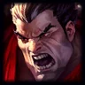
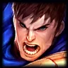
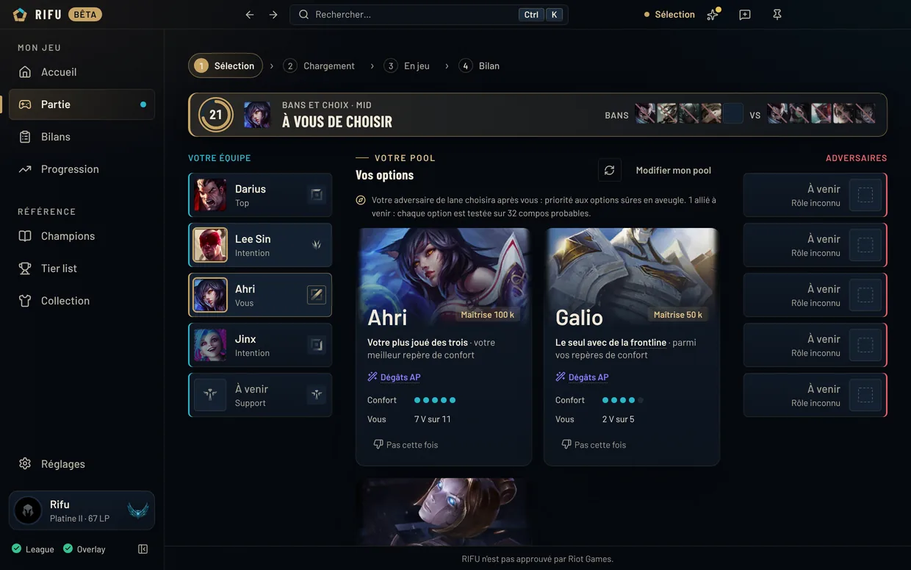

Bêta ouverte sur invitation · code sur Discord
La pièce qui manque à votre compo. RIFU, l'app compagnon League of Legends gratuite pour Windows
En sélection, RIFU lit votre compo et propose trois champions de votre pool, chacun avec sa raison. Puis il vous suit au chargement, en partie et jusqu'au bilan noté sur 100.
- Gratuit, sans abonnement
- API officielles de Riot
- Sans Overwolf à installer
Démo jouable · vous êtes au mid
La draft commence…
DariusTop Lee SinJungle
Lee SinJungle ?VousMid
?VousMid JinxADC
JinxADC ThreshSupport
ThreshSupport

GarenTop ViJungle
ViJungle ZedMid
ZedMid CaitlynADC
CaitlynADC LeonaSupport
LeonaSupport
Démonstration illustrative. Dans l'app, l'analyse s'appuie sur les fiches des 173 champions, vos parties et les statistiques du patch.
De la sélection au bilan, il change d'écran avec League
Vous n'ouvrez rien : RIFU suit la partie et affiche le bon écran au bon moment. Quatre moments, un seul compagnon.
-
1Sélection des champions
Vos options, chacune avec sa raison
RIFU suit la draft en direct et dit ce que chaque champion de votre pool apporte de plus que les autres. Vous gardez le dernier mot.
- Trois options de votre pool, sans classement imposé
- Tapez n'importe quel champion : RIFU l'évalue à côté des autres
- Champion verrouillé : runes, sorts et objets avec « Tout importer »

-
2Écran de chargement
Les dix joueurs, avant la Faille
Un écran plein par-dessus le chargement de League, avec le plan de jeu en tête. Vous savez à qui vous avez affaire avant la première seconde.
- Plan de jeu d'équipe et mémo sur votre matchup
- Groupes écrits en clair : « Duo avec Poing »
- Rang, maîtrise, forme sur 12 h et 30 jours, tags

-
3En partie
Des overlays qui aident, sans jouer à votre place
Un HUD compact qui laisse passer vos clics, le panneau Ctrl + X et les écarts d'équipement au TAB. Trois préréglages : Minimal, Standard, Complet.
- Prochain achat adapté à la compo adverse
- Une ligne par lane, chaque joueur face à son adversaire
- Minuteurs du dragon et du Nashor sur la mini-carte

-
4Bilan d'après-partie
Une note sur 100, et ce qui l'explique
Chaque mesure est comparée au meilleur des dix joueurs, avec des poids propres à votre rôle. Un support est jugé sur sa vision, pas sur ses sbires.
- Note pondérée par rôle, MVP et LP gagnés ou perdus
- Ce qui a marché, ce qui coince, chiffre à l'appui
- Le moment où la partie a basculé, et votre duel de lane


Le défaut qui revient devient votre priorité
RIFU relit chaque partie et retient ce qui se répète. Vous travaillez un point à la fois, et vous voyez quand il est réglé. Toujours comparé à votre propre niveau, jamais à celui des autres.
Un défaut qui se répète
Farm qui chute après la lane, avance perdue, trop de temps mort : le bilan le signale quand il revient d'une partie à l'autre.
Un objectif, choisi par vous
RIFU propose l'objectif qui va avec, par exemple « 1 mort au plus avant 15 min ». Vous le prenez, ou aucun.
Un défaut en moins
Quand vous ne le faites plus, il s'affiche « corrigé ». Vos points forts sont suivis de la même façon.
- Votre semaine
- Le résumé de la semaine écoulée sur l'accueil, dès 5 parties.
- Bilan par champion
- Note moyenne, défaut qui revient et point fort, dès 3 parties relues.
- Victoires contre défaites
- Ce qui change entre les deux, à votre rôle le plus joué.
- Progression par axe
- Farm, combat, vision, survie et objectifs, avec vos LP sur 30 jours.

Faille, ARAM, Mayhem : les conseils suivent le mode
En ARAM, ce ne sont plus des rôles qui comptent, mais le banc et ce qui manque à l'équipe. Vous pouvez couper les overlays mode par mode.
Classées, normales, Coop contre IA et parties personnalisées
- Options de votre pool selon les manques de la compo
- Écran de chargement, overlays et bilan complets
- Bans suggérés et compo « nous contre eux », axe par axe
ARAM et ARAM Mayhem
- Ce qui manque à votre équipe : tank, engage, poke, soins
- Votre champion comparé au banc et à vos cartes
- Builds, runes et sorts propres au mode
- En Mayhem, les augments les plus choisis avec votre champion
Les tiers d'augments disent à quel point un augment est choisi, jamais combien il fait gagner.
Deux champions par partie
- Les builds de vos deux champions côte à côte, dès le salon
- Overlays et bilan comme en classée
- Historique filtré par mode
Tout le reste, dans la même app
Ce qu'il fallait chercher dans plusieurs outils, dont un payant, RIFU le réunit au même endroit.

Tier list par rôle
Podium des trois meilleurs, tiers S+ à D et filtre « Mon pool », calculés par RIFU sur les parties classées EUW Émeraude et plus.

Collection de skins
Complétion, valeur boutique en RP et chromas. Elle reste sur votre PC.
- Runes et objets en un clic
- Page de runes, sorts sur la bonne touche et set d'objets, ensemble ou séparément.
- Simulateur de draft
- Testez une compo hors partie et voyez ce que votre pool ne couvre pas.
- Mémo de matchup
- Un mémo contre chaque adversaire, rappelé à la draft et au chargement suivants.
- Suivi des LP
- LP du jour sur l'accueil, courbe sur 30 jours, même pour les parties jouées RIFU fermé.
- Profils joueurs
- Rangs, tags et champions de n'importe quel joueur EUW, chaque partie notée sur 100.
- Ce patch pour vous
- Une puce Buff, Nerf ou Ajusté à côté de vos champions et de vos objets.
- Fiches champions
- Build, runes, compétences et matchups, avec votre bilan sur le champion.
- Overlays à votre goût
- Opacité de 30 à 100 %, taille de 80 à 130 %. Le texte reste lisible.
- Toujours au patch
- Objets, runes et compétences à jour à chaque patch, sans nouvelle version.
- Partie trouvée
- Alerte sonore, et acceptation automatique si vous l'activez.
- Défi du jour
- Trois questions de culture LoL, les mêmes pour tout le monde.
- Toutes les fonctions en détail
- Chaque écran, chaque overlay, chaque réglage.
Vous aider à jouer, jamais jouer à votre place
API officielles uniquement
RIFU ne lit jamais la mémoire du jeu, et ne touche aux fichiers de League que pour activer les replays, si vous le demandez.
Toujours plusieurs options
Jamais « jouez X ». Les suggestions viennent de votre pool, pas d'une méta unique.
Pas d'avantage caché
Aucune estimation de MMR, aucun joueur masqué identifié, aucun suivi des sorts adverses.
Vos données chez vous
Historique, mémos et réglages restent sur votre PC. Vos retours ne partent qu'avec votre accord.
Ce que les autres font payer, RIFU l'offre
Le meilleur de Porofessor et de DPM, réuni dans une seule app gratuite.
| Fonction | PorofessorApp Windows | DPMApp Windows | |
|---|---|---|---|
| Prix de l'application | Gratuite | Gratuite avec pub | Premium, dès 3,33 €/mois |
| Conseils de draft selon les manques de votre compo, dans votre pool | Inclus | Non | Premium |
| Import des runes, des sorts et du build | Inclus | Inclus | Premium |
| Tags des joueurs au chargement (séries, one-trick…) | Inclus | Inclus | Non |
| Écart d'or et build conseillé en partie | Inclus | Inclus | Premium |
| Suivi des LP | Inclus | Non | Premium |
| Analyse détaillée après la partie | Inclus | Inclus | Premium |
| Collection de skins et valeur en RP | Inclus | Non | Premium |
D'après les offres publiques de Porofessor et de l'application Windows de DPM (réservée à l'abonnement Premium, 4,99 €/mois ou 39,99 €/an), relevées en octobre 2026 ; elles peuvent avoir évolué depuis. Porofessor et DPM sont des marques de leurs propriétaires respectifs. RIFU n'est affilié à aucun d'eux.
Questions fréquentes
Une autre question ? Le Discord RIFU répond, en général dans la journée.
RIFU est-il gratuit ?
Oui, entièrement. À terme, RIFU sera financé par une publicité discrète, uniquement dans la fenêtre RIFU et hors partie : jamais en sélection, au chargement, en jeu ni dans un overlay.
RIFU remplace-t-il Porofessor ou DPM ?
C'est son ambition. RIFU réunit dans une seule app le scouting de l'écran de chargement, l'assistant de draft, les overlays en jeu, le bilan de partie et le suivi des LP, sans abonnement. Son point fort : il explique ce qui manque à votre compo et propose des champions de votre propre pool.
Est-ce que je risque quelque chose avec mon compte ?
RIFU n'utilise que les interfaces que Riot met à disposition des applications tierces : l'API Riot, l'API du client League et les données de la partie en cours. Il ne lit jamais la mémoire du jeu, ne touche aux fichiers de League que pour activer les replays si vous le demandez, et ne joue jamais à votre place.
Il suit les règles de Riot pour les applications tierces : plusieurs options plutôt qu'un choix imposé, pas d'estimation de MMR, pas d'identification des joueurs masqués en sélection, pas de suivi des sorts ni des ultimes adverses.
Comment obtenir un code bêta ?
La bêta est fermée et se fait sur invitation, avec un code personnel par joueur. Rejoignez le Discord RIFU pour demander une place.
Comment est calculée la note sur 100 ?
Chaque mesure de la partie (éliminations, participation, dégâts, or, sbires, vision, objectifs) est rapportée au meilleur des dix joueurs, puis pondérée selon votre rôle. Le meilleur de l'équipe gagnante est MVP ; le bilan nomme aussi le meilleur de l'autre équipe. Ce n'est ni un rang ni une estimation de MMR.
Les overlays gênent-ils le jeu ?
Non. Ils ne prennent jamais le focus du jeu, le HUD laisse passer vos clics, et vous réglez leur opacité (de 30 à 100 %) et leur taille. Pendant la bêta, ils demandent le mode fenêtré sans bordure ; le plein écran viendra avec la version signée.
Faut-il installer Overwolf ?
Non. RIFU est une application autonome : elle n'a pas besoin du client Overwolf.
RIFU fonctionne-t-il sur Mac ou sur mobile ?
Non. RIFU est une application pour Windows 10 et 11, là où se joue League of Legends. Depuis un téléphone, vous pouvez déjà demander votre code bêta sur le Discord et vous envoyer le lien de téléchargement pour votre PC.
Pourquoi Windows affiche-t-il un avertissement ?
Pendant la bêta, l'installeur n'est pas encore signé par un certificat, donc Windows SmartScreen le signale. La signature est prévue pour la sortie publique. En attendant, téléchargez RIFU uniquement depuis ce site ou la page officielle des versions.
Quels modes, quels serveurs, quels systèmes ?
La Faille de l'invocateur (normales, classées, Coop contre IA, parties personnalisées), la Partie rapide, l'ARAM et l'ARAM Mayhem. En Arena, RIFU ne donne pas de conseil de draft, et les parties Brawl ne sont pas suivies. Serveur EUW, sur Windows 10 et 11.
Quelles données sont envoyées ?
Le minimum pour afficher les profils et l'écran de chargement. Tout le reste reste sur votre PC, et les retours ne partent que si vous l'activez. Le détail est dans la politique de confidentialité.
Prêt pour votre prochaine partie ?
Trois étapes, deux minutes. Gratuit, pour Windows 10 et 11.
- Installez RIFU L'installeur de la dernière version, mises à jour automatiques ensuite. Télécharger pour Windows
- Demandez votre code bêta Un code personnel, sur le Discord de la communauté. Rejoindre le Discord
- Lancez League RIFU détecte votre compte et votre pool tout seul. Pour les overlays, passez en fenêtré sans bordure.